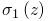
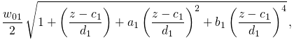
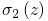
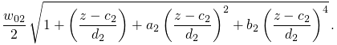
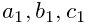
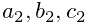

Huang’s defocusing model
An alternative model of the defocusing curves is described by Huang et al. [1]. The relationship between the axial position of a molecule and its imaged widths along two perpendicular axes is given by
|  |  | |||
|  |  |
Here  and  are unknown parameters of the model which can be determined by the calibration process.
References
- [1] (2008) Three-dimensional super-resolution imaging by stochastic optical reconstruction microscopy. Science 319 (5864), pp. 810–3. External Links: Document Cited by: Huang’s defocusing model.
Generated on Sun Oct 4 04:17:20 2015 by LaTeXML ![[LOGO]]()